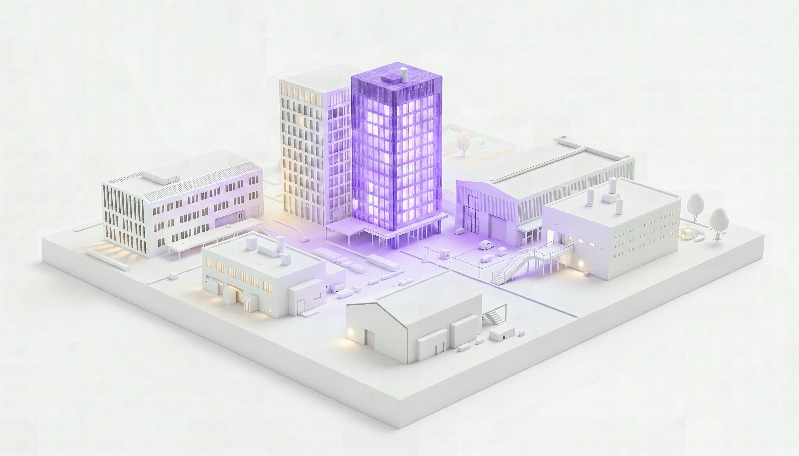
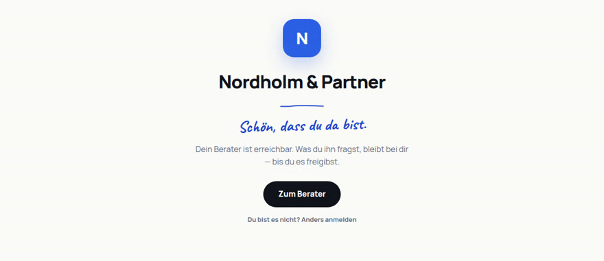

Der Stand des Designs
Alle Flächen der Plattform, wie sie heute aussehen sollen. Was hier steht, gilt — verworfene Richtungen stehen in der Chronik, nicht in dieser Liste.
Die Beispielmarke Nordholm & Partner ist Platzhalter; auf den Kundenflächen lässt sie sich unten im Bild wechseln.
Hinter dem ? im Kopfband liegt eine Hilfe-Ebene: sie erklärt die Fläche, auf der man steht, an Ort und Stelle. Sie hängt bisher am Modell, an Kunden, Marke, Marge und Sätze, KI-Berater, Verwaltung und den beiden neuen Flächen — die übrigen bekommen ihre Erklärstellen, sobald sie angefasst werden.
Das Fundament
Eine Quelle für alles, was quoroAIs eigene Marke trägt.
Das quoroAI-Designsystem
Weißer Grund, das Logo-Lila als einzige Akzentfarbe, Clash Display als Schauschrift, Glas als Material fürs Chrom. Zustände sind Füllstände im Glas. Die Tokens liegen in system.css.
quoroAI selbst
Die Flächen, auf denen quoroAI mit eigenem Namen auftritt — davor steht noch keine Beratung.

Die Wurzel, die Tür der Plattform
Die Adresse ohne Beratung dahinter: ein Bildschirm, zwei Wege. Beim Ankommen geht im Modell das Licht an; hinter einer Adresse, hinter der niemand arbeitet, bleibt es aus.
Die Beratung arbeitet
Das Cockpit trägt immer die quoroAI-Marke. Alle Räume hängen am Modell — dort geht man hinein, nicht über ein Menü.

Das Modell, das Cockpit der Beratung
Ein Architekturmodell der Beratung im Abendlicht, die Zentrale glüht als Glas-Laterne. Ein Film zeigt, wie der KI-Berater es aufbaut, danach ist es begehbar: jedes Mandat ein Gebäude.
Was die Kunden der Beratung sehen
White-Label: hier steht die Marke der Beratung, nicht quoroAI. Diese Flächen binden system.css bewusst nicht ein.

Die Startseite, die Lobby der Beratung
Unter der Adresse der Beratung arbeiten zwei verschiedene Leute. Wohin die Tür führt, entscheidet der Zugang: zum Berater, ins Cockpit, oder erst einmal zum Anmelden.
Verworfen und deshalb nicht mehr hier: das Hafen-Motiv, die drei ersten Richtungen (Nachtglut, Tageslicht, Signal), die Cockpit-Vorschläge A bis E und der ruhige Grundriss. Warum jedes davon weg ist, steht in docs/chronik/ — die Entscheidungen bleiben, die Entwürfe nicht.